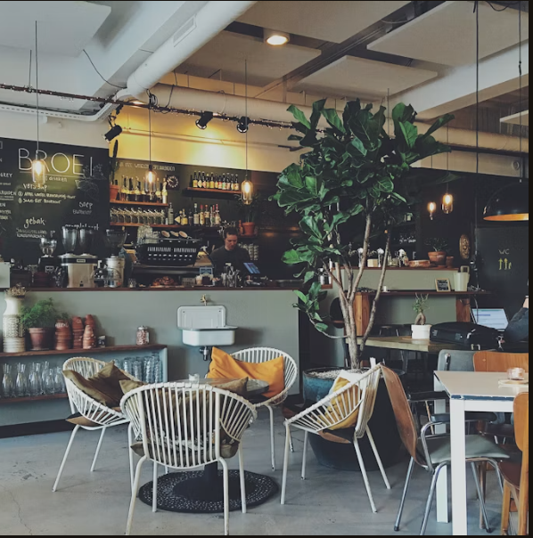
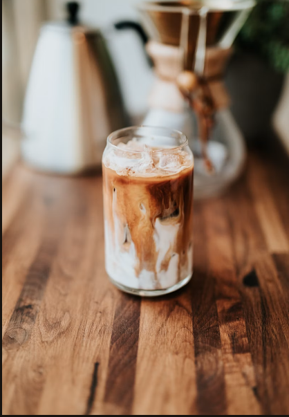

A Space to Slow Down
A comfortable space to pause, relax, and connect.
A LITTLE ABOUT US
A welcoming place for coffee, biscuits, and community.

OUR STORY
Founded in the heart of Mayfair, Mulliri brings together carefully prepared coffee, freshly baked biscuits, and a welcoming atmosphere.
We believe the best moments are often the simplest: a cup shared with a friend, a quiet break, or a conversation that lasts a little longer.
Explore our menu ↗
A comfortable space to pause, relax, and connect.
Carefully selected coffee and thoughtful preparation.
Attention to detail in every drink and biscuit.
A place for friends, neighbours, and new faces.